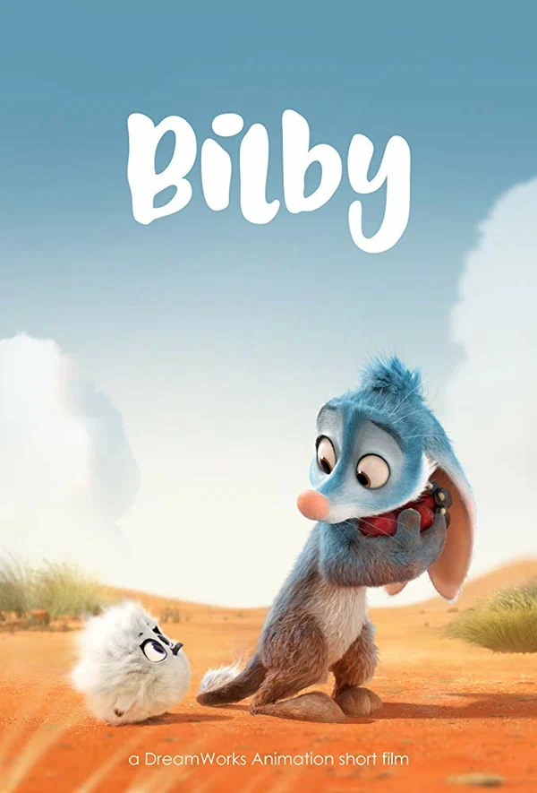

Короткометражный фильм DreamWorks
История о дружбе в суровой австралийской пустыне
Узнать больше«Билби» — американский анимационный короткометражный фильм 2018 года. Сценарий и режиссура: Лирон Топаз, Пьер Перифель и Джей Пи Санс. Продюсер: DreamWorks Animation.
В центре сюжета — билби (маленький пушистый зверёк), который пытается защитить птенца альбатроса от опасностей австралийской пустыни.
Фильм создан в рамках программы DreamWorks и основан на отменённом проекте студии «Ларрикины».

Нажмите, чтобы посмотреть мультфильм
(здесь будет ваше видео)В австралийской глубинке билби ищет фрукты, спасаясь от варана. Он натыкается на брошенного птенца альбатроса, лежащего на спине. Сжалившись, билби переворачивает его, и птенец к нему привязывается.
Билби не хочет иметь ничего общего с птенцом, но снова и снова вынужден спасать его от хищников: стаи динго, озера с пираньями, колючих эхидн, крокодилов, бегущих эму, большой белой акулы и лесного пожара.
В финале на высоком утёсе билби набирается смелости и нападает на белобрюхого орлана, чтобы спасти птенца. Птенец учится летать, а в флэшфорварде мы видим, как они живут вместе на скале, имея вдоволь еды.
В мультфильме есть эпизод, где Билби плавает в озере с пираньями. Помогите ему увернуться!